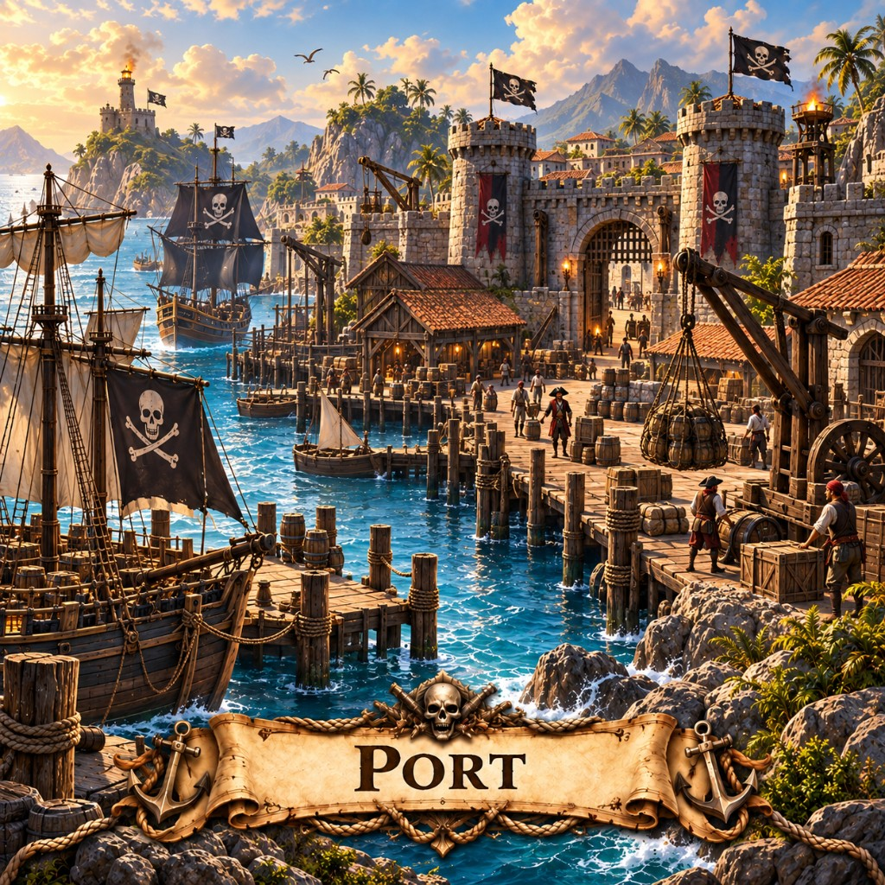

Ports in Marauder's Sea spawn warships and marauders and run trade ships for gold. How to place and protect them.

A port is a mouth. Feed it timber and it spits hulls. Stop feeding it and the harbor goes quiet — which is how rival captains know you are hurting.
Build near water. Spawns Warships and Marauders. Auto trade between ports for gold unless trade is stopped (attacks pause it for 5 minutes, or use Stop/Start trading). Ships can destroy a port; it does not heal. Cost shares a scaling bucket with Factories.
Back to the building list or pick a map like X Marks the Spot and play this mobile strategy game in the browser.